Every day, in one glance
Streaks, a monthly calendar and a full year grid. Long-press any day to write what happened — a note, a plan, or a win — and it shows up as a coloured dot.
- Note
- Planned
- Completed
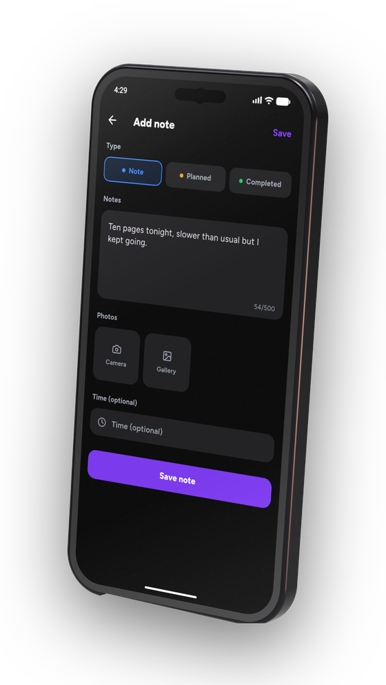
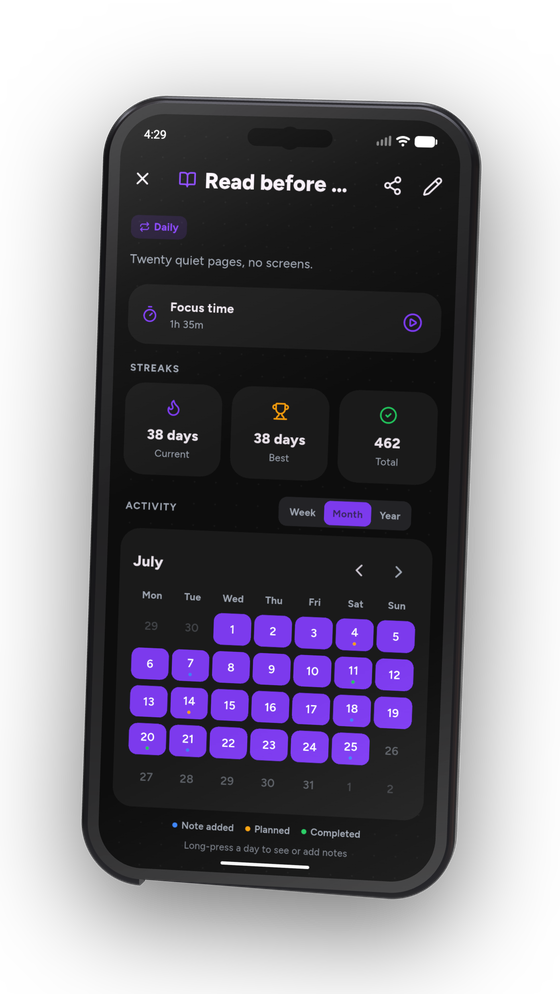
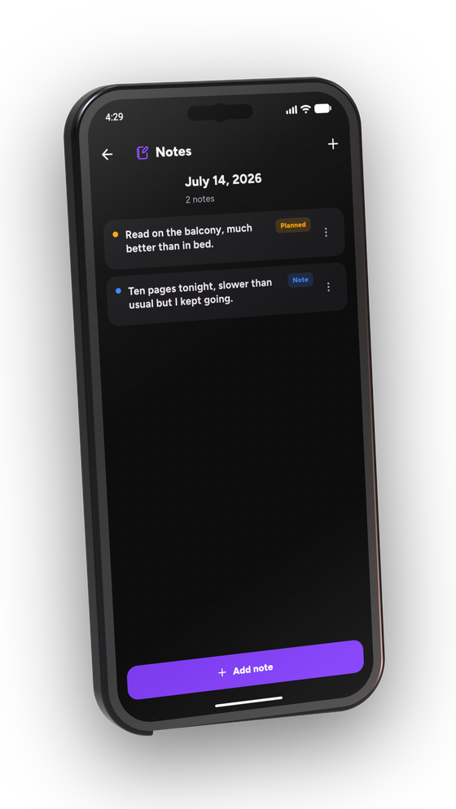
An Android habit tracker that keeps quiet. Log with one tap, see a whole year of it at a glance, and start a focus session when a habit needs one. Nothing leaves your phone.
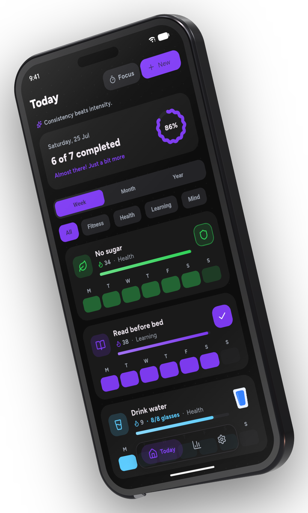
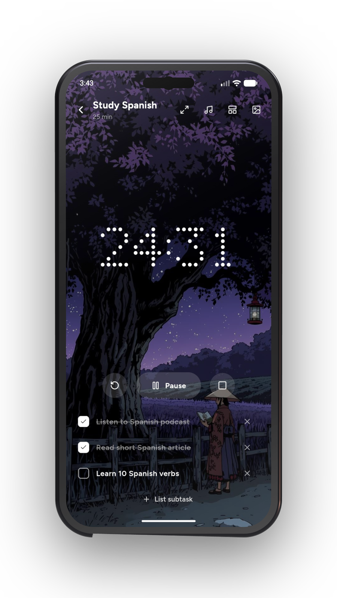
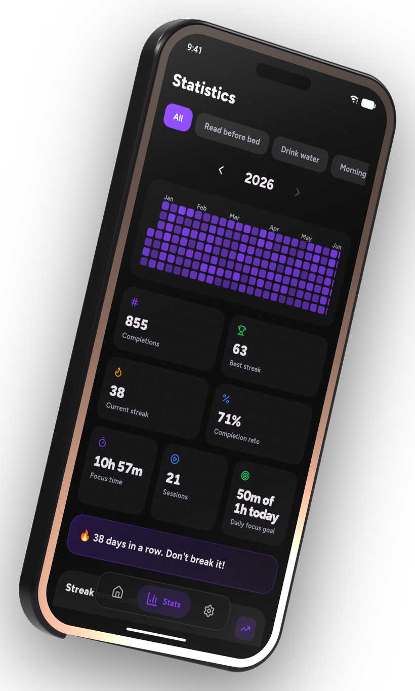
Features
Three kinds of habit, a focus timer, four home-screen widgets and a year you can read at a glance. All of it offline.
Streaks, a monthly calendar and a full year grid. Long-press any day to write what happened — a note, a plan, or a win — and it shows up as a coloured dot.



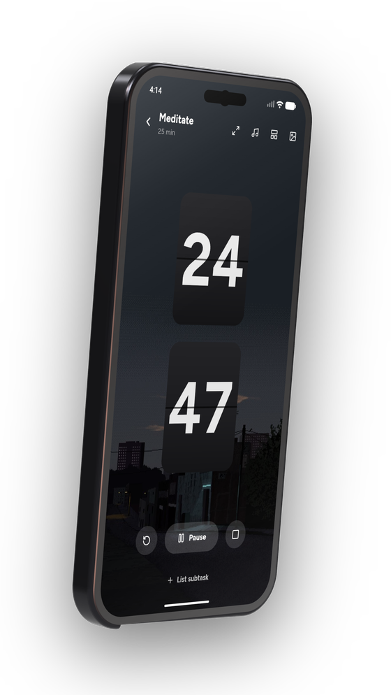
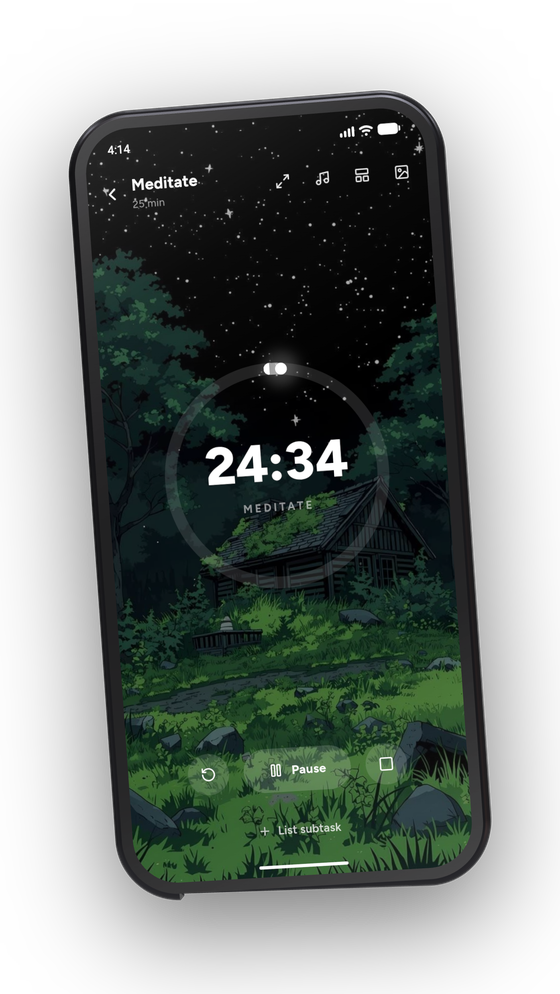
25 min 4 rounds 6 scenesPick a habit and a duration, or just start. Pomodoro rounds, three clock faces, six scenes and sound. Your habit's steps become the session checklist.
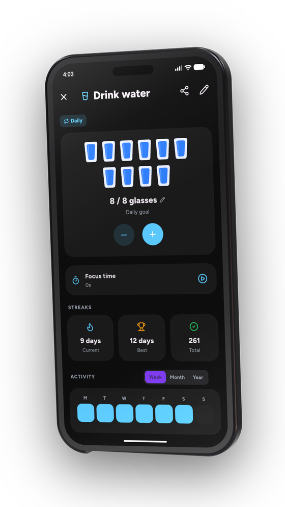
8 glasses 20 pages 3 stepsCount glasses of water or pages read, break a habit into steps, or track one you want to avoid — where every clean day counts in your favour.
Switch between Classic and Minimal in a tap — cards and colour, or thin lines and calm. Same data, dressed the way you like it.
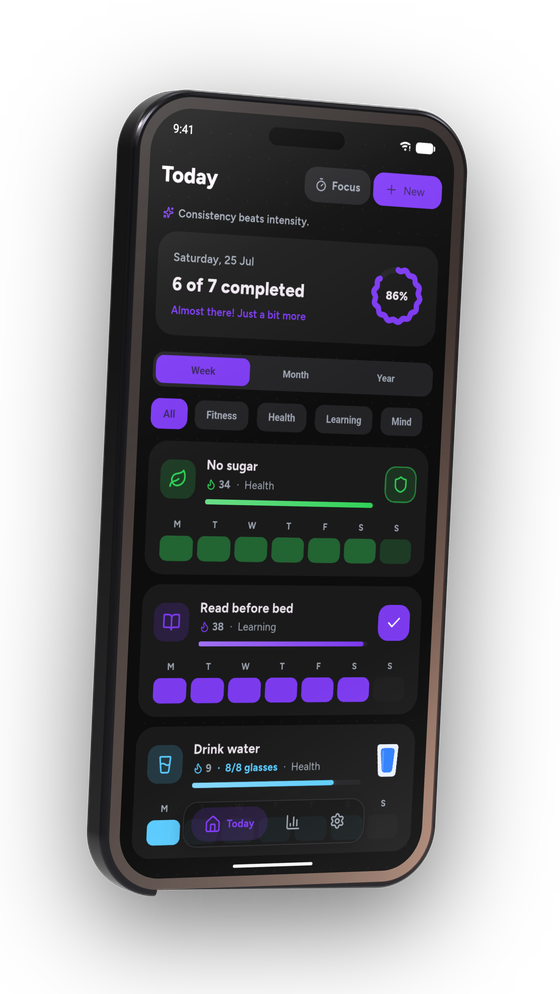
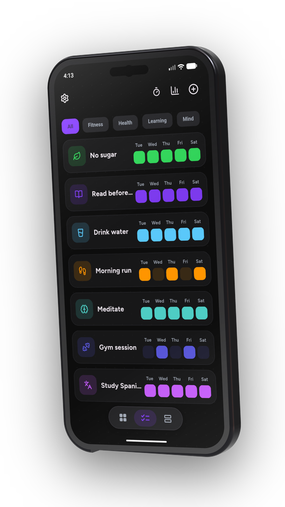
Your data
So I built the one I wanted: quiet, fast, offline, and free. No streak held hostage behind a subscription, no notification begging me to come back, no dashboard selling my data back to me.
It's open source under GPLv3 and translated by people who use it. If it's missing something you need, the issue tracker is right there.
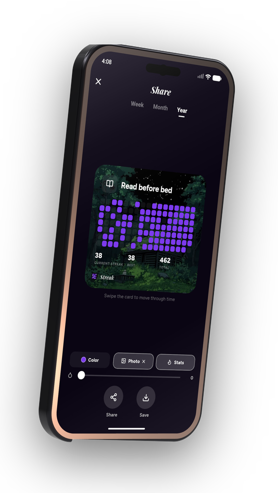
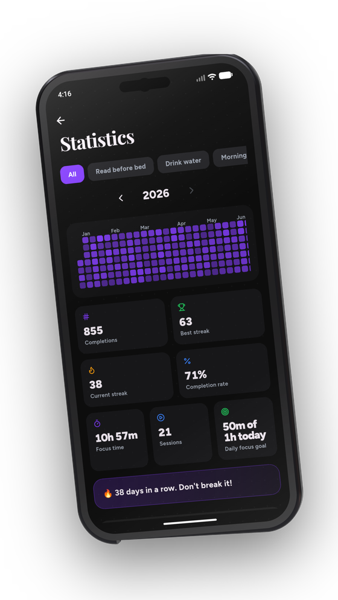
Download
Support
There is no premium tier and nothing to buy inside the app. If Streak is useful to you, any of these three keeps it moving.